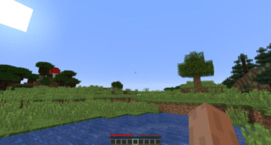
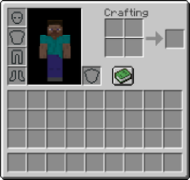
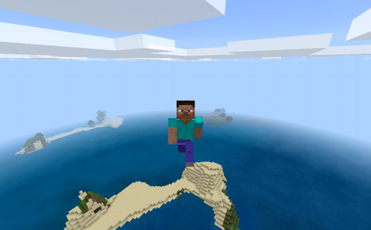
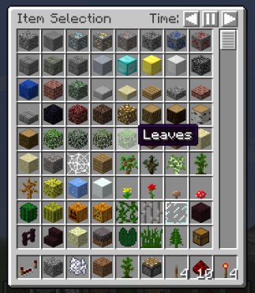
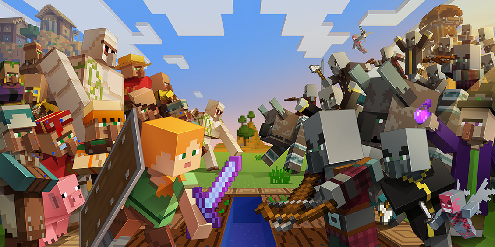

Mode Minecraft
เอาชีวิตรอด (Survivor)
ในโหมดนี้ผู้เล่นจะต้องรวบรวมวัสดุเพื่อที่จะสร้าง, คราฟต์ และเพิ่มคะแนนค่าประสบการณ์ (Experience, EXP หรือ XP) ซึ่งโหมดนี้จะมีเลือด, ความหิว, แถบพลังอาวุธ, ช่องเก็บของ และเมื่ออยู่ใต้น้ำจะมีหลอดออกซิเจน
ถ้าคุณตายคุณจะกลับไปที่จุดเกิด (Spawn Point)
- 
- 
สร้างสรรค์ (Creative)
ในโหมดนี้ผู้เล่นจะมีบล็อกและไอเทมต่าง ๆ ไม่จำกัด และสามารถทำลายสิ่งต่าง ๆ ได้ตามที่ตัวเองต้องการ ผู้เล่นจะเป็นอมตะและไม่มีเลือด แถบพลังอาวุธ, ความหิว และสามารถบินได้ ผู้เล่นสามารถเข้าถึงของบางอย่างที่ไม่มีในโหมดเอาชีวิตรอดได้
เช่น Spawn Egg เป็นต้น ผู้เล่นจะไม่สามารถหา Command Block ได้ในช่องเก็บของ ผู้เล่นจะต้องเสกมันออกมาด้วยคำสั่ง /give หรือ /setblock
- 
- 
ผจญภัย (Adventure)
ผู้เล่นสามารถกระทำต่อของบางอย่างได้เท่านั้น เช่น คันโยก, ปุ่ม และม็อบ อย่างไรก็ตามผู้เล่นสามารถทำลายบล็อกได้ด้วยเครื่องมือ โดยใช้ Data tag "CanDestroy" และสามารถวางบล็อกได้ถ้าบล็อกที่ผู้เล่นถืออยู่มี
Data tag "CanPlaceOn" โหมดนี้มีไว้เพื่อสำหรับทำแมปผจญภัย
ฮาร์ดคอร์ (Hardcore)
ในโหมดนี้การเล่นจะเหมือนโหมดเอาชีวิตรอด แต่จะปรับความยากเป็น "ยาก" และโลกที่เล่นในโหมดนี้เมื่อผู้เล่นตายจะมีให้เลือกว่าจะลบโลกนั้นหรือเปลี่ยนเป็นโหมดผู้ชมอย่าถาวรในทางเทคนิคฮาร์ดคอร์เป็นโหมดเกมที่ถูกปรับปรุงมากกว่าที่จะเป็นโหมดเกม
อย่างไรก็ตามด้วยไม่มีการโกงนั้นก็จะเรื่องที่เป็นไปได้ในการได้รับประสบการณ์ "เอาชีวิตรอดแบบฮาร์ดคอร์" การที่จะทำ "โหมดสร้างสรรค์แบบฮาร์ดคอร์" ผู้เล่นจะต้องแก้ไขโลกของเกมด้วยเครื่องมือภายนอก หรือให้เปิด LAN และเปิดใช้การโกง เมื่อดู ๆ ไปแล้ว
"โหมดสร้างสรรค์แบบฮาร์ดคอร์"กับ"โหมดสร้างสรรค์แบบไม่ฮาร์ดคอร์" เกือบเหมือนกัน เพราะโหมดสร้างสรรค์วิธีที่จะตายก็คือ การตกโลก หรือใช้คำสั่ง /kill ด้วยเหตุนี้จึงทำให้"โหมดฮาร์ดคอร์"ส่วนใหญ่จะหมายถึง"โหมดเอาชีวิตรอดแบบฮาร์ดคอร์" ในเซิร์ฟเวอร์ถ้าผู้เล่นในเซิร์ฟเวอร์ตายผู้เล่นคนนนั้นจะถูกแบนและถ้าทุกคนในเซิร์ฟเวอร์ถูกแบนโลกของเซิร์ฟเวอร์จะถูกลบเมื่อคุณดูที่คำว่าฮาร์ดคอร์ในโหมดเล่นคนเดียว"โหมดฮาร์ดคอร์!"จะเป็นสีแดงฮาร์ดคอร์ในทางเทคนิกแล้วไม่ใช่โหมดเกม
และมันไม่สามารถเปิดใช้งานคำสั่งด้วย /gamemode
ผู้ชม (Spectator)
โหมดเกมนี้สามารถใช้ได้ตั้งแต่เวอร์ชั่น 1.8 ขึ้นไป เมื่อคุณอยู่ในโหมดผู้ชม คุณจะสามารถทะลุทุกบล็อกได้ เห็นม็อบต่าง ๆ ว่ามันมองยังไงโดยกดคลิกซ้ายที่มัน และคุณจะล่องหนยกเว้นถ้ามีผู้เล่นอีกคนหนึ่งอยู่ในโหมดผู้ชมเช่นกันผู้เล่นคนนนั้นจะสามารถเห็นคุณได้คุณจะไม่สามารถทุบทำลายบล็อกหรือม็อบและไม่สามารถย้ายของในช่องเก็บของได้เมื่ออยู่ในโหมดมุมมองบุคคลที่สามคุณจะเห็นตัวเองโปร่งใสโดยจะเห็นเป็นหัวโปร่งใสและไม่มีร่างกายคุณจะสามารถบินได้เร็วกว่าโหมดฮาร์ดคอร์
